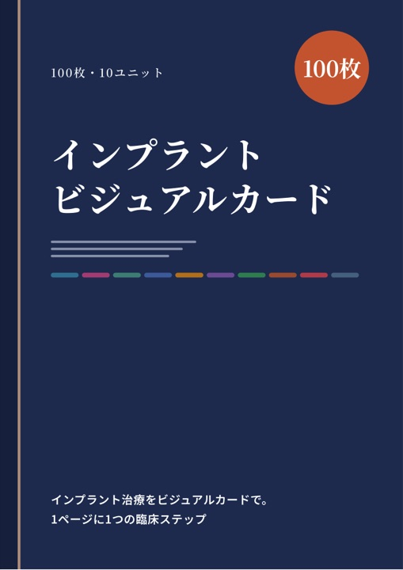
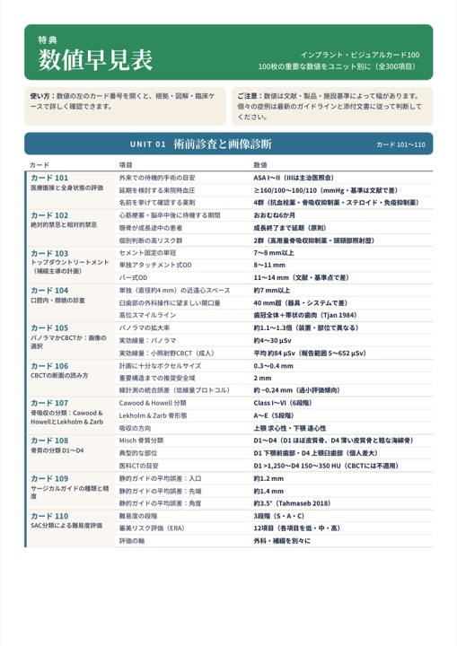

インプラント・ビジュアルカード100
ご購入いただいた教材はすべてこのページにあります。下のボタンからPDFを開き、保存・印刷してお使いください。
100カード
10ユニット
300重要な数値

本編インプラント・ビジュアルカード100
術前診査から外科、補綴、合併症、メインテナンスまで、10ユニット・100枚のカード。1枚1テーマで、要点・重要な数値・図解・架空の臨床ケース・覚え方・落とし穴・セルフチェック・出典をまとめています。
PDFを開く・保存 ›
特典特典「数値早見表」
100枚のカードの重要な数値（全300項目）を、ユニット別の一覧に。数値の横のカード番号から、詳しい説明にすぐ戻れます。A4で印刷してチェアサイドに。
PDFを開く・保存 ›10のユニット
- 01術前診査と画像診断カード 101〜110
- 02危険な解剖カード 201〜210
- 03インプラント選択と治療計画カード 301〜310
- 04外科プロトコルカード 401〜410
- 05オッセオインテグレーションと荷重カード 501〜510
- 06骨造成・GBR・サイナスカード 601〜610
- 07軟組織と審美カード 701〜710
- 08アバットメントと補綴カード 801〜810
- 09合併症とインプラント周囲炎カード 901〜910
- 10リスク患者とメインテナンスカード 1001〜1010
はじめ方
- まず「使い方」と目次を見る本編の2〜5ページで、カードの読み方と100枚の並びを確認します。
- 1日1ユニット、10枚ずつ「一言でいうと」と図解を見て、重要な数値を確認し、セルフチェックを解きます。10日で1周します。
- 早見表を印刷して手元に特典「数値早見表」をA4で印刷し、診療前の確認に使います。
NEXT STEP次のステップ
今日はユニット1（術前診査と画像診断）の10枚を開き、カード101のセルフチェックから解いてみましょう。1枚5〜10分が目安です。
歯科医師・歯科医学生のための学習・復習用の教材です。症例はすべて架空のものです。数値は文献・製品・施設基準によって幅があります。実際の診療では、最新のガイドライン、各製品の添付文書、ご自身の臨床判断を優先してください。